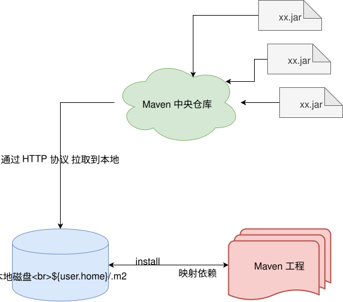

Maven 是一个项目管理和构建自动化工具。
Maven 提供了一个命令行工具可以把工程打包成 Java 支持的格式（比如 jar），并且支持部署到中央仓库里，这样使用者只需要通过工具就可以很快捷的运用其他人写的代码，只需要你添加依赖即可

Maven 使用惯例优于配置的原则 。它要求在没有定制之前，所有的项目都有如下的结构（其实我们之前的 Java 工程目录都是遵循了这个结构规范）：
| 目录 | 目的 |
|---|---|
| ${basedir} | 存放 pom.xml 和所有的子目录 |
| ${basedir}/pom.xml | Maven 的项目配置文件 |
| ${basedir}/src/main/java | 项目的 java 源代码 |
| ${basedir}/src/main/resources | 项目的资源，比如说 property 文件 |
| ${basedir}/src/test/java | 项目的测试类，比如说 JUnit 代码 |
| ${basedir}/src/test/resources | 测试使用的资源 |
这里的 ${basedir} 代表的是 Java 工程的根路径，在我们这里就是工程的根目录啦。一个 Maven 项目在默认情况下会产生 JAR (Java 的一种压缩格式)文件，另外 ，编译后 的 classes 会放在 ${basedir}/target/classes 下面， JAR 文件会放在 ${basedir}/target 下面。
Maven 命令
想要使用 Maven 这个工具，是要在命令行（终端软件）里输入指令的方式来执行的，我们需要大家了解几个常用的命令，注意命令要在工程的根目录下执行哦
mvn clean compile编译命令，Maven 会自动扫描 src/main/java 下的代码并完成编译工作，执行完，会在根目录下生成 target/classes 目录（存放所有的 class）
mvn clean package编译并打包命令，这个命令是 compile 和 package 的集合，也就是说会先执行 compile 命令，然后在执行 jar 打包命令，这个的结果会把所有的 java 文件和资源打包成一个jar,jar 是 java 的一个压缩格式，方便我们灵活的运用多个代码
mvn clean install执行安装命令，这个命令是 compile 和 package、install 的集合，也就是说会先执行 compile 命令，然后在执行 jar 打包命令，然后执行 install 命令安装到本地的 Maven 仓库目录里，这个目录是 ${user_home}/.m2
这个 ${user_home} 指的就是你的电脑登录用户名的个人目录
如果大家在本地完成了 Maven 的安装，大家可以打开我的电脑进行看一看的
这个操作基本和mvn clean package看起来一样，所以我们就不演示了
mvn compile exec:java -Dexec.mainClass=${main}这个命令的意思是在 compile 执行完后，执行运行 Java 的命令，具体执行哪个 Java 类是由 -Dexec.mainClass=${main} 参数指定的，比如我们想执行 com.youkeda.Test类，那么这个完整的命令就是
11mvn compile exec:java -Dexec.mainClass=com.youkeda.Test
Maven 坐标
41<groupId>com.youkeda.course</groupId>2<artifactId>app</artifactId>3<packaging>jar</packaging>4<version>1.0-SNAPSHOT</version>这四个标签组成了 Maven 的坐标，所谓坐标就是一种位置信息，Maven 的坐标决定了这个 Maven 工程部署后存在 Maven 仓库的文件位置，所以这个坐标信息是必须要指定的。
groupId
groupId 就像一个文件夹一样，它的命名和 Java 的包比较一致
artifactId
artifactId 有点像文件名一样，在一个 groupId 内，它应该是唯一的,你不能使用中文或者特殊字符，从规范上来说只能使用小写的英文字母、.、-、_。比如：app、member.shared 这些都可以
Maven 工程执行完后会把整个工程打包成packaging指定的文件格式，默认情况下packaging的值是jar,所以如果pom.xml文件中没有声明这个标签，那就是 jar
packaging 有如下的几种格式
version 很有意思的，它基本上遵守了软件工程中对版本号的约定。
在 Maven 的世界里，会把一个工程分为两个状态，这也是软件工程里最最常用的规范。
SNAPSHOT关键字RELEASE。当然你可以不用特意的加上RELEASE,因为只要不是SNAPSHOT，那就是RELEASE一般会用三位数字来表示版本号，所以大概是x.x.x这样的格式
第一位代表的是主版本号
主版本号一般是团队约定来的，上面 iOS 的例子中
13就是主版本号
第二位代表的是新增功能
上面例子中的
1代表的就是新增功能后的版本，这个数字表明苹果在 13 这个版本里，有了 1 次新增功能的行为
第三位代表的是 bugfix 后的版本
bugfix 是修复代码缺陷、bug 的行为，我们知道苹果经常会发布一些版本用于修复问题，所以上面的
2就是 bugfix 版本，从这个数字你可以大致判断，苹果做了两次 bug 修复
也有可能用两位版本，那就是没有第一位的主版本号（因为某些时候，可能不需要主版本号）
软件的版本大多时候是从 1.0.0开始的，在开发状态下那就是 1.0.0-SNAPSHOT,请注意这个格式[version]-SNAPSHOT
一般来说每一位的最大值就是100
1.2 Maven 属性配置
代表设置一个参数：
java.version，它的值是1.8
这个参数是指定 Maven 编译时候源代码的 JDK 版本，
${java.version}这个值有点特殊，它是一个动态值，${key}这个语法会动态找到key这个参数配置的值，所以上面的例子中${java.version}的实际值是1.8
这个参数指定的是工程代码源文件的文件编码格式，一般情况下，我们都设置成
UTF-8
这个参数作用是是按照这个值来进行编译源代码，比如这里的例子是按照 JDK1.8 进行编译
依赖管理 dependencies
dependency 就是用于指定当前工程依赖其他代码库的，Maven 会自动管理 jar 依赖
一旦我们在 pom.xml 里声明了 dependency 信息，会先去本地用户目录下的
.m2文件夹内查找对应的文件，如果没有找到那么就会触发从中央仓库下载行为，下载完会存在本地的.m2文件夹内
一般我们会把别人写的代码库称为三方库，自己、团队写的称为二方库，这个概念请大家记住，以后我们可能会这样描述内容的
中央仓库
前面我们提到过 Maven 会把所有的 jar 都存放在中央仓库里，我们可以通过 https://search.maven.org/ 这个网站来搜索 jar。可惜的是这个网站部署在国外，在国内访问不到，我们可以访问阿里云的镜像服务器 https://maven.aliyun.com/mvn/search
间接依赖
间接依赖是 mvn 成功的核心要素，简单的来说，如果一个remote工程依赖了 okhttp 库，而当前工程locale依赖了 remote工程，这个时候locale工程也会自动依赖了 okhttp
Annotation (注解)
对元素的补充说明
能够在编译、运行阶段读取信息, 而且不会污染源代码。可以借助它来实现一些增强功能，在 Spring 当中就重度使用了 Annotation，通过运行阶段动态的获取 Annotation 从而完成很多自定义的行为
1、Target
java.lang.annotation.Target 自身也是一个注解，它只有一个数组属性，用于设定该注解的目标范围，比如说可以作用于类或者方法等。因为是数组，所以可以同时设定多个范围
具体可以作用的类型配置在 java.lang.annotation.ElementType 枚举类中，我们说几个常用的
ElementType.TYPE
可以作用于 类、接口类、枚举类上
ElementType.FIELD
可以作用于类的属性上
ElementType.METHOD
可以作用于类的方法上
ElementType.PARAMETER
可以作用于类的参数
如果想要同时作用于类和方法上，那么你就可以
11({ElementType.TYPE,ElementType.METHOD})如果某个 Annotation 的 Target 设定为 METHOD ，那么你就只能在方法前面上面引用它，其他的地方都不行,其他 Target 值也类似这个规则
我们再看几个例子来区分一下，
1.1 ElementType.TYPE
81public class MessageServiceImpl implements MessageService{34 public String getMessage() {5 return "Hello World!";6 }78}1.2 ElementType.METHOD
81public class MessageServiceImpl implements MessageService{23 4 public String getMessage() {5 return "Hello World!";6 }78}1.3 ElementType.FIELD
61public class MessageServiceImpl implements MessageService{23 4 private WorkspaceService workspaceService;56}1.4 ElementType.PARAMETER
xxxxxxxxxx71public class MessageServiceImpl implements MessageService{23 public String getMessage(("msg")String msg) {4 return "Hello "+msg;5 }67}2、Retention
java.lang.annotation.Retention 自身也是一个注解，它用于声明该注解的生命周期，简单的来说就是在 Java 编译、运行的哪个环节有效，它的值定义在java.lang.annotation.RetentionPolicy枚举类中，有三个值可以选择
1.SOURCE: 也就是说是纯注释作用 2.CLASS: 也就是在编译阶段是有效的 3.RUNTIME: 在运行时有效
11(RetentionPolicy.RUNTIME)这个代码表示的就是在运行期间有效
如果是我们自己定义的 Annotation ，一般我们都会设置成
RUNTIME
3、Documented
java.lang.annotation.Documented 自身也是一个注解，它的作用是将注解中的元素包含到 JavaDoc 文档中，一般情况下，都会添加这个注解的。
4、@interface
@interface就是声明当前的 Java 类型是 Annotation，固定语法，就是这样写就好
5、Annotation 属性
11String value() default "";Annotation 的属性有点像类的属性一样，它约定了属性的类型(这个类型是基础类型：String、boolean、int、long)，和属性名称（默认名称是 value ，在引用的时候可以省略），default 代表的是默认值。
有了这个属性，我们就可以正式的引用一个 Annotation 啦，比如
61import org.springframework.stereotype.Service;23public class Demo {56}注意，Annotation 也是 Java 类，所以一样需要 import 的
上面的@Service 也可以写成
xxxxxxxxxx61import org.springframework.stereotype.Service;23@Service(value="Demo")4public class Demo {56}
因为我们说过 value 是默认属性名称是可以缩写的，所以上面的代码等同于
xxxxxxxxxx61import org.springframework.stereotype.Service;23@Service("Demo")4public class Demo {56}
Annotation 属性是可以有多个的，比如下面的一个注解类
xxxxxxxxxx171@Target(ElementType.PARAMETER)2@Retention(RetentionPolicy.RUNTIME)3@Documented4public @interface RequestParam {56@AliasFor("name")7String value() default "";8910@AliasFor("value")11String name() default "";121314boolean required() default true;1516String defaultValue() default ValueConstants.DEFAULT_NONE;17}
在属性的代码上，我们看到@AliasFor("name")这个是别名的意思，就是说这个属性用这个别名也可以访问到，所以下面的代码是一样的意思
xxxxxxxxxx31@RequestParam("key")2@RequestParam(value="key")3@RequestParam(name="key")